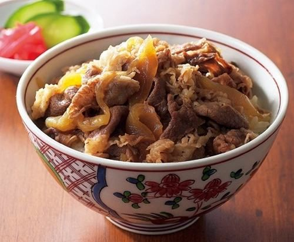

Gyudon

Gyudon is one of the most popular rice bowl dishes in Japan. Shall we cook Gyudon tonight?
Ingredients:
- Neutral oil
- 2 medium onions(very thinly sliced)
- 1 pound very thinly sliced beef (fatty beef chuck or ribeye)
- 2 teaspoons sugar
- 2 tablespoons mirin
- 2 tablespoons soy sauce
- 1 cup dashi stock (can also substitute beef or chicken stock)
- 4 eggs
- 4 cups cooked japanese white rice
- 1 scallion
- 2 teaspoons toasted sesame seeds (optional)
Instructions:
- Heat the neutral oil in a large skillet over medium high heat, and cook the sliced onions for about 10 minutes, stirring often.
- Add the beef and sugar, and cook until the beef is slightly browned.
- Add the mirin, soy sauce, and stock. Bring to a simmer, and cook for about 10-15 minutes to reduce the stock into a thin sauce. Taste for seasoning, and add a little more soy sauce if needed.
- Meanwhile, heat another couple tablespoons of oil in a cast iron or non-stick skillet.
- Cook the eggs sunny-side up. You can cook them in batches if needed. The yolks should still be runny!
- When the beef is done simmering, divide the rice among serving bowls (the original recipe is for 4, so 4 bowls), and top with the beef and an egg for each bowl.
- Garnish with chopped scallion and toasted sesame seeds, if using.